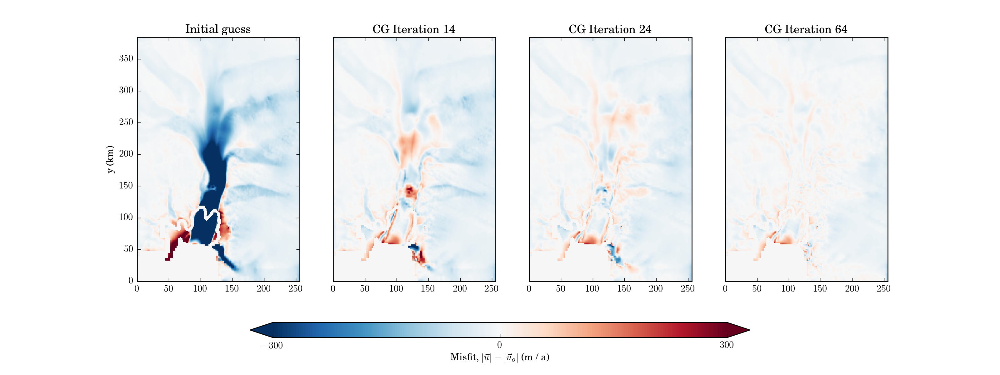

BISICLES Pine Island Glacier inverse problem
These instructions assume that you have working BISICLES executables, including driver and nctoamr. If that is not the case, there are some BISICLES build instructions. Anne Le Brocq has provided us with the data for this application - thanks Anne. You also need to have followed at least the preprocessing step of the first Pine Island Glacier example, up to the point where you create the file "pig-bisicles-1km.2d.hdf5"
The basal traction field used in the Pine Island Glacier example does not result in a model velocity that is a close match to the observations it is based, especially in the ice shelf and grounding line. That because the calculation ignored englacial viscous stresses, which are at least as important as basal stresses close to an upstream from the grounding line, and are the only stresses in the ice shelf. One way to improve on this is to solve a more sophisticated inverse problem, where we try to find basal traction and viscosity coefficients that minimise the mismatch between model and observed speed integrated over the domain, subject to the stress balance equation being satisfied. BISICLES solves this problem using a nonlinear conjugate gradient method, which the solution of both the stress balance equation and an equation involving the adjoint of the stress operator. For details, see our paper, Century-scale simulations of the response of the West Antarctic Ice Sheet to a warming climate
To solve the inverse problem, we simply need to switch stress solver type. Edit one of the config files (config_file), appending the lines:
main.maxTime = 0 #we don't want time dependence, yet
amr.velocity_solver_type = 6 # Inverse problem !
control.velMisfitType = speed # match observed speed (not velocity)
#field of data expressing confidence in speed observations. 0 for no confidence
control.velCoef.type = LevelData
control.velCoef.fileFormat = pig-bisicles-1km.2d.hdf5
control.velCoef.name = velc
control.velCoef.n = 1
#x-component of the observed velocity (could be the speed if the y-component is zero)
control.xVel.type = LevelData
control.xVel.fileFormat = pig-bisicles-1km.2d.hdf5
control.xVel.name = xvel
control.xVel.n = 1
#y-component of the observed velocity (could be the speed if the x-component is zero))
control.yVel.type = LevelData
control.yVel.fileFormat = pig-bisicles-1km.2d.hdf5
control.yVel.name = yvel
control.yVel.n = 1
#Tikhonov regularization coefficients
control.gradCsqRegularization = 1.0e+4
control.gradMuCoefsqRegularization = 1.0e+10
#some box constraints.
control.boundMethod = Projection
control.lowerX0 = -5
control.upperX0 = 5.0
control.lowerX1 = -2.0
control.upperX1 = 0.5
control.writeInnerSteps = false
control.CGmaxIter = 24
control.optimizeX0 = true # default true: optimize w.r.t basal friction coeffcient (C)
control.optimizeX1 = true # default true: optimize w.r.t effective viscosity coeffcient (muCoef)
Configured this way, the inverse problem will first be solved on the coarse mesh, then the mesh will be refined according to the solution, the inverse problem solved on that mesh, and so on. To save time, it is possible to delay solution of the inverse problem until after the mesh has been refined, provided that it is reasonable to tag and refine the mesh based on velocity observations.
control.minLevelForOptimization = 2
Make sure this value is less than or equal to the finest mesh level - or the inverse problem will never be solved, and BISICLES will attempt to evolve the ice sheet according to the observed velocity.
It is usually necessary to refine the mesh a little differently in inverse problems. First, it is often useful to refine fast flow to resolve ice streams (rather than shear margins) because observed velocities can be noisy. Second, velocity can depend rather strongly on pinning points (grounded spots in ice shelf regions). If the pinning points are small, they may be missed at low resolution. There are options designed for both of these issues.
#refine generously in ice streams amr.tag_vel_dx = true amr.vel_dx_tagging_val = 5.0e+5 # refine 500 m/a regions to 1 km amr.vel_dx_finest_level_grounded = 2 amr.vel_dx_finest_level_floating = 1 #tag thin submarine cavities in an attempt to refine around pinning points amr.tag_thin_cavity = true amr.tag_thin_cavity_thickness = 50.0
There is example inverse problem config file containing all the options above, inputs.pig.ctrl, in the Pine Island Glacier example directory. The inverse problem code is run with the same driver as the main code, e.g
> nohup mpirun -np 4 $BISICLES_HOME/BISICLES/code/exec2D/driver2d.Linux.64.mpic++.gfortran.DEBUG.OPT.MPI.ex inputs.pig.ctrl &
As before, log output is directed to stdout in serial and to files called pout.0, pout.1, ... when run
in parallel. Most of the computational effort is spent solving the stress-balance equations and adjoint stress-balance
equations.
BISICLES uses a conjugate gradient (CG) method to minimise an objective function. You can check the progress of the CG iterations by filtering all but a few lines from the log output, e.g
> grep CG pout.0 CGOptimize iteration 0 ||f'(x)||^2 = 3.2763e+21 ||fm(x)||^2 = 2.58641e+15 ||fp(x)||^2 = 3.6316e+13 ||fm(x)||^2 + ||fp(x)||^ = 2.62272e+15 CGOptimize iteration 1 ||f'(x)||^2 = 3.21807e+20 ||fm(x)||^2 = 1.1638e+15 ||fp(x)||^2 = 3.59742e+13 ||fm(x)||^2 + ||fp(x)||^ = 1.19978e+15 ||fm(x)||^2/||fm_old(x)||^2 = 0.449969 CGOptimize iteration 2 ||f'(x)||^2 = 3.15027e+20 ||fm(x)||^2 = 6.09388e+14 ||fp(x)||^2 = 3.48241e+13 ||fm(x)||^2 + ||fp(x)||^ = 6.44212e+14 ||fm(x)||^2/||fm_old(x)||^2 = 0.523618 CGOptimize iteration 3 ||f'(x)||^2 = 1.5534e+20 ||fm(x)||^2 = 5.04767e+14 ||fp(x)||^2 = 3.43979e+13 ||fm(x)||^2 + ||fp(x)||^ = 5.39165e+14 ||fm(x)||^2/||fm_old(x)||^2 = 0.828318 CGOptimize iteration 4 ||f'(x)||^2 = 5.30252e+19 ||fm(x)||^2 = 3.68261e+14 ||fp(x)||^2 = 3.35555e+13 ||fm(x)||^2 + ||fp(x)||^ = 4.01817e+14 ||fm(x)||^2/||fm_old(x)||^2 = 0.729567 CGOptimize iteration 5 ||f'(x)||^2 = 5.16837e+19 ||fm(x)||^2 = 3.24179e+14 ||fp(x)||^2 = 3.28525e+13 ||fm(x)||^2 + ||fp(x)||^ = 3.57032e+14 ||fm(x)||^2/||fm_old(x)||^2 = 0.880297 CGOptimize iteration 6 ||f'(x)||^2 = 4.34712e+19 ||fm(x)||^2 = 2.84882e+14 ||fp(x)||^2 = 3.17025e+13 ||fm(x)||^2 + ||fp(x)||^ = 3.16585e+14 ||fm(x)||^2/||fm_old(x)||^2 = 0.87878 CGOptimize iteration 7 ||f'(x)||^2 = 6.22064e+19 ||fm(x)||^2 = 2.50371e+14 ||fp(x)||^2 = 3.07675e+13 ||fm(x)||^2 + ||fp(x)||^ = 2.81138e+14 ||fm(x)||^2/||fm_old(x)||^2 = 0.878858 CGOptimize iteration 8 ||f'(x)||^2 = 2.93165e+19 ||fm(x)||^2 = 2.16841e+14 ||fp(x)||^2 = 2.9643e+13 ||fm(x)||^2 + ||fp(x)||^ = 2.46484e+14 ||fm(x)||^2/||fm_old(x)||^2 = 0.866078 CGOptimize iteration 9 ||f'(x)||^2 = 2.10664e+19 ||fm(x)||^2 = 2.00161e+14 ||fp(x)||^2 = 2.86198e+13 ||fm(x)||^2 + ||fp(x)||^ = 2.2878e+14 ||fm(x)||^2/||fm_old(x)||^2 = 0.923076 CGOptimize iteration 10 ||f'(x)||^2 = 2.54682e+19 ||fm(x)||^2 = 1.89347e+14 ||fp(x)||^2 = 2.78359e+13 ||fm(x)||^2 + ||fp(x)||^ = 2.17183e+14 ||fm(x)||^2/||fm_old(x)||^2 = 0.945974 CGOptimize iteration 11 ||f'(x)||^2 = 2.67661e+19 ||fm(x)||^2 = 1.66832e+14 ||fp(x)||^2 = 2.61458e+13 ||fm(x)||^2 + ||fp(x)||^ = 1.92978e+14 ||fm(x)||^2/||fm_old(x)||^2 = 0.881094 CGOptimize iteration 12 ||f'(x)||^2 = 2.51114e+19 ||fm(x)||^2 = 1.57725e+14 ||fp(x)||^2 = 2.51855e+13 ||fm(x)||^2 + ||fp(x)||^ = 1.82911e+14 ||fm(x)||^2/||fm_old(x)||^2 = 0.945412 CGOptimize iteration 13 ||f'(x)||^2 = 1.15635e+19 ||fm(x)||^2 = 1.43323e+14 ||fp(x)||^2 = 2.43446e+13 ||fm(x)||^2 + ||fp(x)||^ = 1.67667e+14 ||fm(x)||^2/||fm_old(x)||^2 = 0.908685 CGOptimize iteration 14 ||f'(x)||^2 = 1.47344e+19 ||fm(x)||^2 = 1.37475e+14 ||fp(x)||^2 = 2.37304e+13 ||fm(x)||^2 + ||fp(x)||^ = 1.61206e+14 ||fm(x)||^2/||fm_old(x)||^2 = 0.959203
The quantity ||fm(x)||^2 is the main part of the objective function, and ||fp(x)||^2 is the penalty function. At first, ||fm(x)||^2 is reduced quickly, then its rate of improvement slows down - this stage usually corresponds to "overfitting", where higher frequency components creep into the solution. The parameter control.CGhang determines the relevant ratio (||fm(x)||^2/||fm_old(x)||^2) between the current and previous CG iteration - here we have picked 0.95, which is rather low for time independent problems. The default is 0.999. Once ||fm(x)||^2/||fm_old(x)||^2 exceeds CGhang the inverse problem solver judges the problem to be solved well enough, and returns the resulting fields to the main program. The main program (assuming it is not complete) then refines the mesh according to whatever criteria are set in the config file, and could either construct a new inverse problem with the coarser mesh solution (the basal traction and viscosity coefficients) as an initial guess, or (if specified) carry out a time step.
A file is written at the end of every CG iteration which contains the current estimate of the solution. These are currently named like ControlOuter??lev.??????.2d.hdf5 (e.g ControlOuter.1lev.000002.2d.hdf5 at the end of iteration 2 after 1 level of refinement). The most useful are the observed and modelled velocities (velox,veloy) and (velbx,velby), and the solution muCoef (the coefficient of viscosity) and C (the basal traction coefficient). The latter two can be extracted and e.g written to a flat file, and can then be read (through the LevelData interface) for use in forward model runs. As we can see in the figures below, the model and observed speed are quite close after 24 CG iterations
Note that you can't just solve the inverse problem and get the right answer. It is ill-posed, both in that there are more parameters than data, and that some parameter vectors (short-wavelength variations) are likely to be spurious (overfitting). The Tikhonov regularization parameters can be used to address both, but they are somewhat arbitrary and it is necessary to employ some sort of heuristic (e.g an L-curve plot) to choose them.
There is another fly in the ointment, at least in Pine Island Glacier. If you run the forward problem with the resulting muCoef and C, the glacier will thicken quickly (100 m/a) at the grounding line. This is not a model issue in particular, but a discrepancy between the observed velocity and thickness. There is a tall ridge under the grounding line, which would mean either (1) the ice must be stretching as it moves downstream - in which case the observed velocity cannot be correct, or (2) PIG should have seen thickening and GL advance in the 2000's - which observations of thinning and GL retreat tend to refute, or (3), the ridge is much lower. (3) seems most likely, see e.g Rignot et al 2014.
If we assume (3), we can at least get an idea of how the ridge needs to drop by evolving the thickness, but changing the bed rather than the surface. Add
amr.evolve_topography_fix_surface = true #bed relaxation
main.maxTime = 10
to the config file. Every timestep, the bedrock will be updated, and then
the inverse problem will be re-solved to keep C and muCoef in line.
This is by no means the ultimate answer to this problem (and if it was, we
would have published it :)